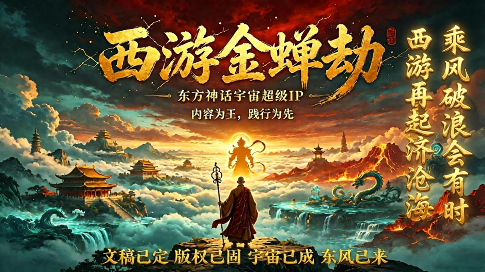

《西游金蝉劫》IP宇宙 世界观圣经
西游金蝉劫 世界观圣经 名句摘录：
1.有情佛—— 能理解、背负并包容世间至情至执，将伤痕与情债升华为悲悯的更高阶佛性。
2.满怀敬意，为所有被辜负女人的深情正名。
3.佛本是人，修佛先修心。成佛不是消灭过往，是背负所有痕迹，仍愿前行。
4.妖也是人，欲望是底色。放下固然是解脱，但，守望，也是生命的一种。
5.每位女性都能在她身上，看见自己的成长，照见自身的怯懦。
6.女人的情感中，多少都藏有痴傻的成分，这便是这份痴傻共同的底色。
7.佛说，因果不虚，可若我把命刻进你的骨血，这因，你逃得掉吗？
8.佛祖，如果成佛是一种背负，我愿意背负这一生的苦难，辉煌，痴情与爱恋。
9.我判你轮回，不是惩罚，是成全——渡你去凡尘，亲自看一看，何为情，何为苦，何为众生。
⏩欢迎阅读，批评指正。
《西游金蝉劫》IP宇宙 简介
粤产电影，会成为中国电影的珠穆朗玛！！！
《西游金蝉劫》IP系列电影
《金蝉子·前传·渡缘劫》
《蝎子精·女妖王》
《蝎子精·烈焰焚心》
《女儿国·上》
《女儿国·中》
《女儿国·下》
《白鼠精·痴情·香花烛》
《白鼠精·痴情·男儿泪》
《赤焰红蟒·妖王》
《西游·金蝉劫·有情佛》
10部主线大电影完成定稿，10+部妖族支线故事线确定。包含玉兔，杏仙，悟空，青狮等等
够20年以上开发周期。
以《金蝉子前传渡缘劫》为故事基准线，一部比一部炸裂，这是事实描述，不是夸张，更不是营销话术。
绿泡泡，围脖，搜【金蝉子前传渡缘劫】就可以看第一部的小说，好不好，看完再评。
100%原创故事，可全网查重。
100%版权证书多本，可信时间戳一堆，分阶段国内外服务器存档，全网创作留痕，版权铁证链。
这是 影视领航人 王总，一年多来，不断喊的那个，梦寐以求的那个东方神话宇宙超级IP！
没有半点虚言！文本小说都在，请亲自验证！
不靠猜测，不靠盲目，靠绝对实力！
西游金蝉劫，东方漫威，独一档，20年内无竞品！
⏩欢迎阅读，批评指正。
《西游金蝉劫》IP宇宙 佛哲核心
三首偈语，阐述《西游金蝉劫》的哲学核心
知了・金蝉偈
蝉不懂禅，妄称知了。
蝉亦为禅，共佛新生。
蜕壳重生，夏鸣短暂。
顿悟超脱，静心修行。
心静蝉声，无字禅神。
静为终道，鸣为有情。
心静蝉声伴安眠， 蝉声便是无字禅。
遍历千情终有果， 渡尽心劫有情佛。
---
知了・悲欣交集
路返程，归来途,
尘烟尽，皆峴佛。
霜侵骨，念销磨，
千峰过，自渡河。
云栖壑，妄痕没，
心无缚，赴寥阔。
---
《知了・西游金蝉劫》
文稿已定，
版权已固，
宇宙已成，
东风已至。
内容为王，
践行为先。
乘风破浪会有时，
西游再起济沧海。
立东方神话哲思之基，铸华夏 IP 血肉之魂。
弃浮泛平移无根之弊，开神州史诗长线之门。
筑国人精神情寄之锚，竞寰宇 IP 浩瀚之林。
承西游千载未尽之绪，启有情成佛崭新乾坤。
⏩欢迎阅读，批评指正。
